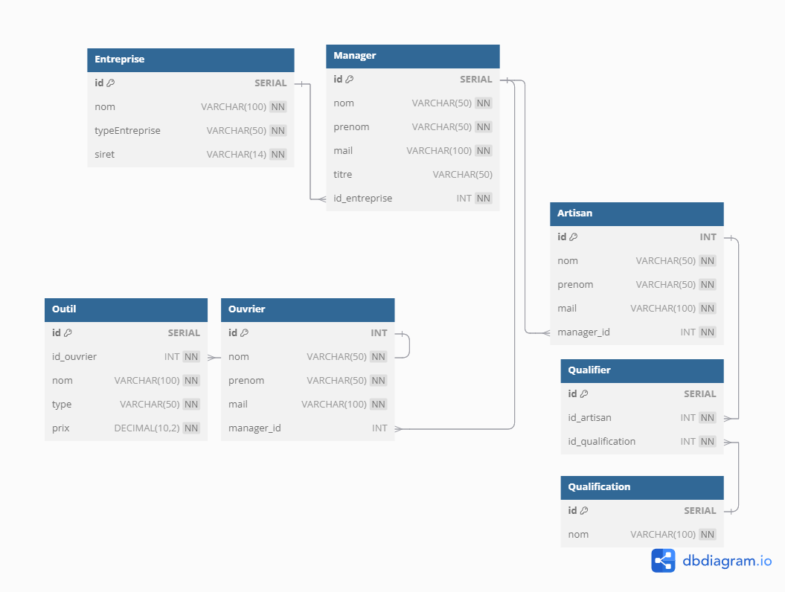

Introduction à la Programmation Orientée Objet (POO)
Qu'est-ce que la POO ?
La Programmation Orientée Objet (POO) est un paradigme de programmation qui organise le code autour d'objets. Un objet est une représentation numérique d'une entité du monde réel ou conceptuel, contenant des données (propriétés) et des comportements (méthodes). L'objectif de la POO est de rendre les programmes plus modulaires, réutilisables et faciles à maintenir, en structurant le code en objets interconnectés.
Comparaison avec la programmation procédurale
La programmation procédurale, quant à elle, organise le code en une série d'instructions exécutées séquentiellement. Elle repose principalement sur des fonctions et des procédures qui manipulent des données globales. En comparaison, la POO regroupe les données et les fonctions au sein des objets, rendant le code plus modulaire et facile à réutiliser. La POO favorise aussi l'abstraction, tandis que la programmation procédurale demande souvent de travailler avec des détails plus bas-niveau, ce qui peut rendre la gestion de grands projets plus complexe.
Schéma de Données
Dans ce cours, nous allons explorer la transformation d'un schéma de base de données en classes Java. Notre schéma de base de données est composé de plusieurs tables interconnectées, représentant une structure qui gère les entreprises, les managers, les artisans, les ouvriers, et les outils.
Cependant, pour rendre cette formation encore plus captivante, imaginons que notre base de données est générée par un administrateur un peu excentrique. Ce personnage fou fait des demandes parfois absurdes, qui nous permettront de découvrir les capacités et la puissance de la programmation orientée objet. À chaque étape, nous répondrons à ces demandes improbables en créant des classes Java adaptées à notre modèle de données.
model.sql
| Aspect | Description |
|---|---|
| Entreprise | Contient les informations sur les entreprises |
| Manager | Gère les informations des managers liés aux entreprises |
| Artisan | Détails sur les artisans, avec une clé étrangère reliant chaque artisan à un manager |
| Qualification | Répertorie les qualifications disponibles |
| Qualifier | Lien entre artisans et leurs qualifications |
| Ouvrier | Détails sur les ouvriers, également liés aux managers |
| Outil | Informations sur les outils associés aux ouvriers |